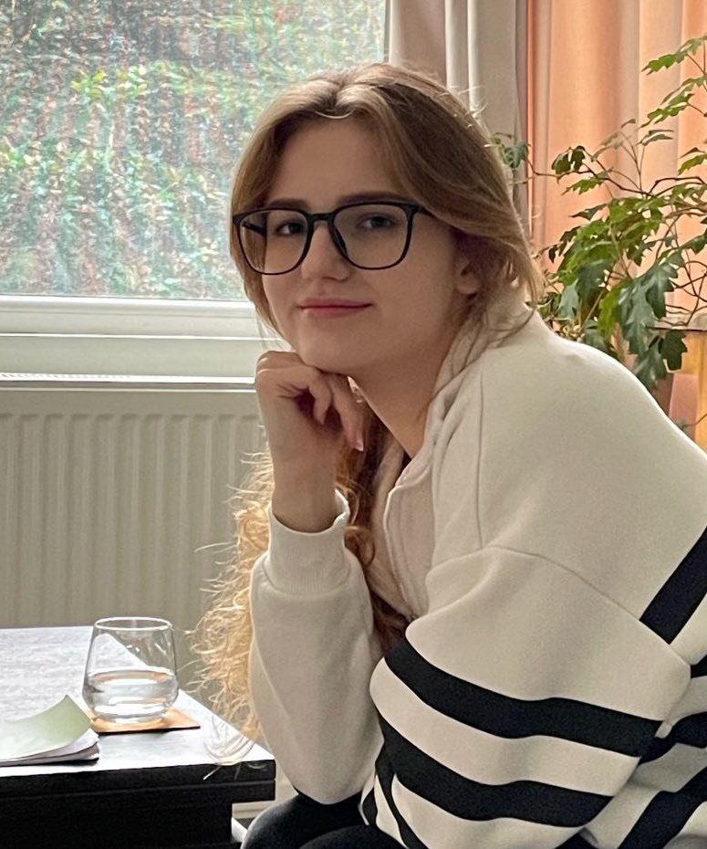

Научиться справляться, а не «исправиться»
Я психолог, работаю в когнитивно-поведенческой терапии и терапии принятия и ответственности. Помогаю, когда тревожно, когда трудно с собой или с другими. Справляться — не значит терпеть.

Узнаёте себя?
Отметьте то, что откликается. Из этого получится первое сообщение мне, и не придётся подбирать слова.
Пока ничего не отмечено. Можно выбрать один пункт или все сразу.
Ваше сообщение
Ничего не сохраняется на сайте. Сообщение уйдёт, только когда вы сами нажмёте «Отправить».
Как я работаю
Я против обесценивания любых проблем и состояний. Основа моей работы — когнитивно-поведенческая терапия: подход с доказанной эффективностью, где мы разбираем, как мысли влияют на чувства и поступки, и пробуем новое на практике.
- Когнитивно-поведенческая терапия
- Находим мысли, которые запускают тревогу или самокритику, проверяем их на прочность и подбираем те, с которыми жить легче.
- Рационально-эмоционально-поведенческая терапия
- Работаем с жёсткими «должен» и «обязана», из-за которых обычные трудности кажутся катастрофой.
- Терапия принятия и ответственности
- Учимся не бороться с каждым неприятным чувством, а двигаться к тому, что для вас важно, даже когда тревожно.
- Без советов «как надо». Помогаю разобраться и выбрать то, что подходит именно вам. Даю техники, литературу и поддержку.
- В вашем темпе. Если о чём-то пока не готовы говорить, мы это не трогаем.
- Конфиденциально. Мои заметки на сессии нужны только для нашей работы и никуда не уходят.
Как проходит работа
-
Вы выбираете время
В календаре ниже видны свободные окна. Оплата сразу при записи, ссылка на встречу придёт на почту.
-
Первая встреча
Знакомимся и понимаем, комфортно ли нам вместе. Определяем запрос и намечаем, куда двигаться. Чёткий запрос заранее не нужен.
-
Регулярные сессии
Обычно раз в неделю по 55 минут. Между встречами — небольшие задания, чтобы изменения закреплялись в жизни, а не только на сессии.
Пишу о терапии без пафоса
Честно о том, как устроена работа с психологом, и о ловушках, в которые попадают и клиенты, и я сама.
- Сейчас все проработаю с психологом и заживу наконец-то! О том, почему не нужно ждать, пока станешь «идеальным», чтобы разрешить себе жить
- Перед встречей с психологом часто бывает волнение от неизвестности Как проходит первая консультация и к чему готовиться
- Психолог, психиатр, психотерапевт. Кто есть кто? Чем отличаются специалисты и к кому идти со своим запросом
Обо мне
Меня зовут Анастасия, я дипломированный психолог по направлению «Психология личности», окончила Воронежский государственный университет.
Не останавливаюсь в обучении: прохожу повышение квалификации, слежу за исследованиями и тем, как развивается психология. Сама прошла личную терапию и знаю, как непросто прийти к незнакомому человеку и начать говорить о личном.
Образование
- 2024 Терапия принятия и ответственности (ACT): полный курс, ACT в нозологиях и FACT Академия современной психологии, 180 часов
- 2023 Психологическое консультирование с использованием методов РЭПТ А. Эллиса АНО ДПО «НАДПО», 144 часа
- 2023 Когнитивно-поведенческая терапия в практике психолога АНО ДПО «НАДПО», 115 часов
- 2019–2023 Бакалавриат, психология Воронежский государственный университет
Запись на консультацию
Сессия длится 55 минут
Первая встреча длится столько же, сколько и все следующие. Видеосвязь в Zoom или Google Meet — как вам удобнее. Нужны наушники и место, где вас не услышат.
Перенести или отменить встречу можно бесплатно не позднее чем за 24 часа.
Не нашли подходящее время? Напишите мне, подберём.
Частые вопросы
Мне точно нужно к психологу? Кажется, у других проблемы серьёзнее
Терапия нужна тому, кто сам в ней заинтересован. Если что-то мешает жить так, как вам хочется, этого достаточно. Не нужно ждать, пока станет совсем плохо.
Страшно рассказывать о личном незнакомому человеку
Это нормально: так работают границы, которые нас защищают. Доверию нужно время, и торопить его мы не будем. Начать можно с того, о чём говорить легче.
Сколько понадобится встреч?
Зависит от запроса. За одну встречу редко удаётся полностью решить проблему, но уже на ней можно многое понять. На первой консультации я расскажу, как вижу работу с вашим запросом.
Чем психолог отличается от психиатра?
Психиатр — врач: ставит диагнозы и может назначить лекарства. Психолог не ставит диагнозов и не назначает препараты, а помогает разобраться в мыслях, чувствах и поведении. Если я увижу, что вам нужна помощь врача, скажу об этом прямо.
Что делать, если мне очень плохо прямо сейчас?
Если есть мысли причинить себе вред, пожалуйста, обратитесь в экстренные службы своей страны, во многих странах это номер 112. Консультация психолога не заменяет экстренную помощь.